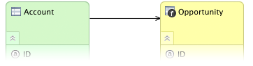

How to use CloudConnect
Examples
A suite of example projects is integrated into the CloudConnect application. Each project demonstrates a common ETL use case. Use these examples to learn and to build your own.
Learn more Get the demo projectsData Modeling

Step 1 in project development: Build the logical data model (LDM), which includes the attributes, facts, datasets, and dimensions, as well as the relationships between them. Each project needs an LDM.
Learn moreExtract Transform Load (ETL)
After building your LDM, you can start building the processes to download data from your sources, transform its structure as needed, and upload the data through the LDM into your project. CloudConnect provides validation, testing, and logging tools to assist in ELT development.
Learn moreAutomate your data loads
After your ETL graphs have been published to the platform, you may automate data loads using GoodData Data Integration Console. This web console enables configuration of scheduled ETL runs and notifications based on their success or failure.
Learn more